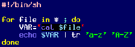
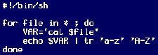

| Purchase | Copyright © 2002 Paul Sheer. Click here for copying permissions. | Home |
|
|
| |
To edit a text file means to interactively modify its content. The creation and modification of an ordinary text file is known as text editing. A word processor is a kind of editor, but more basic than that is the UNIX or DOS text editor.
The important editor to learn how to use is vi. After that you can read why, and a little more about other, more user-friendly editors.
Type simply,
|
vi <filename> |
to edit any file, or the compatible, but more advanced
|
vim <filename> |
To exit
vi, press  , then the key
sequence
:q! and then press
, then the key
sequence
:q! and then press  .
.
vi has a short tutorial which should get you going in 20 minutes. If you get bored in the middle, you can skip it and learn vi as you need to edit things. To read the tutorial, enter:
|
vimtutor |
which edits the file
5 10 |
================================================================================ W e l c o m e t o t h e V I M T u t o r - Version 1.4 ================================================================================ Vim is a very powerful editor that has many commands, too many to explain in a tutor such as this. This tutor is designed to describe enough of the commands that you will be able to easily use Vim as an all-purpose editor. The approximate time required to complete the tutor is 25-30 minutes, |
You are supposed to edit the tutor file itself as practice, following through 6 lessons. Copy it first to your home directory.
Table 6.1 is a quick reference for vi. It contains only a few of the many hundreds of available commands but is enough to do all basic editing operations. Take note of the following:
will get
you out of insert mode, where you are not able to insert
characters, but can now do things like arbitrary deletions and
moves.
 - (i.e., : ) gets you into
command-line mode, where you can do operations like
importing files, saving of the current file, searches, and text processing.
Typically, you type : then some text, and then hit .
- (i.e., : ) gets you into
command-line mode, where you can do operations like
importing files, saving of the current file, searches, and text processing.
Typically, you type : then some text, and then hit .
Something all UNIX users are used to (and have come to expect) is syntax highlighting. This basically means that a bash (explained later) script will look like:
 instead of 
Syntax highlighting is meant to preempt programming errors by colorizing correct keywords. You can set syntax highlighting in vim by using :syntax on (but not in vi). Enable syntax highlighting whenever possible--all good text editors support it.
Although UNIX has had full graphics capability for a long time now, most administration of low-level services still takes place inside text configuration files. Word processing is also best accomplished with typesetting systems that require creation of ordinary text files. [This is in spite of all the hype regarding the WYSIWYG (what you see is what you get) word processor. This document itself was typeset with LATEX and the Cooledit text editor.]
Historically, the standard text editor used to be ed. ed allows the user to see only one line of text of a file at a time (primitive by today's standards). Today, ed is mostly used in its streaming version, sed. ed has long since been superseded by vi.
The editor is the place you will probably spend most of your time. Whether you are doing word processing, creating web pages, programming, or administrating. It is your primary interactive application.
(Read this if you ``just-want-to-open-a-file-and-start-typing-like-under-Windows.'')
cooledit The best editor for day-to-day work is Cooledit, [As Cooledit's author, I am probably biased in this view.] available from the Cooledit web page <http://cooledit.sourceforge.net/>. Cooledit is a graphical (runs under X) editor. It is also a full-featured Integrated Development Environment (IDE) for whatever you may be doing. Those considering buying an IDE for development need look no further than installing Cooledit for free.
People coming from a Windows background will find Cooledit the easiest and most powerful editor to use. It requires no tutelage; just enter cooledit under X and start typing. Its counterpart in text mode is mcedit, which comes with the GNU Midnight Commander package mc. The text-mode version is inferior to other text mode editors like emacs and jed but is adequate if you don't spend a lot of time in text mode.
Cooledit has pull-down menus and intuitive keys. It is not necessary to read any documentation before using Cooledit.
Today vi is considered the standard. It is the only editor that will be installed by default on any UNIX system. vim is a ``Charityware'' version that (as usual) improves upon the original vi with a host of features. It is important to learn the basics of vi even if your day-to-day editor is not going to be vi. The reason is that every administrator is bound to one day have to edit a text file over some really slow network link and vi is the best for this.
On the other hand, new users will probably find vi unintuitive and tedious and will spend a lot of time learning and remembering how to do all the things they need to. I myself cringe at the thought of vi pundits recommending it to new UNIX users.
In defense of vi, it should be said that many people use it exclusively, and it is probably the only editor that really can do absolutely everything. It is also one of the few editors that has working versions and consistent behavior across all UNIX and non-UNIX systems. vim works on AmigaOS, AtariMiNT, BeOS, DOS, MacOS, OS/2, RiscOS, VMS, and Windows (95/98/NT4/NT5/2000) as well as all UNIX variants.
Emacs stands for Editor MACroS. It is the monster of all editors and can do almost everything one could imagine that a single software package might. It has become a de facto standard alongside vi.
Emacs is more than just a text editor. It is a complete system of using a computer for development, communications, file management, and things you wouldn't even imagine there are programs for. There is even an X Window System version available which can browse the web.
Other editors to watch out for are joe, jed, nedit, pico, nano, and many others that try to emulate the look and feel of well-known DOS, Windows, or Apple Mac development environments, or to bring better interfaces by using Gtk/Gnome or Qt/KDE. The list gets longer each time I look. In short, don't think that the text editors that your vendor has chosen to put on your CD are the best or only free ones out there. The same goes for other applications.